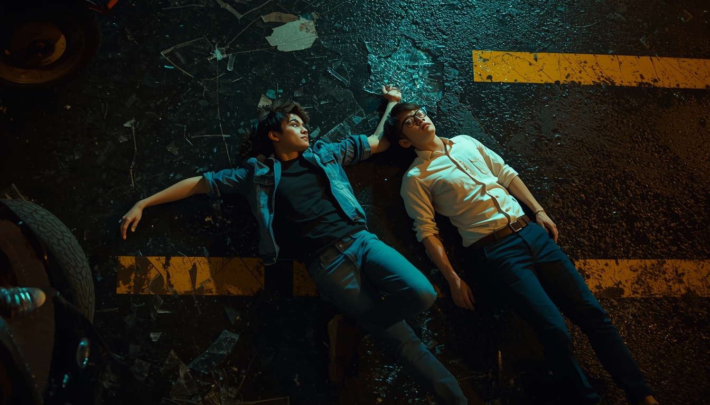
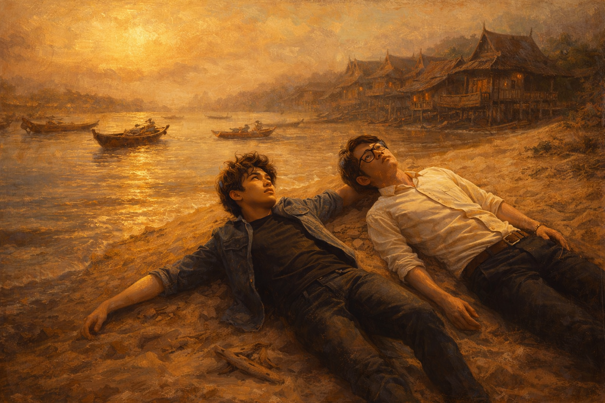
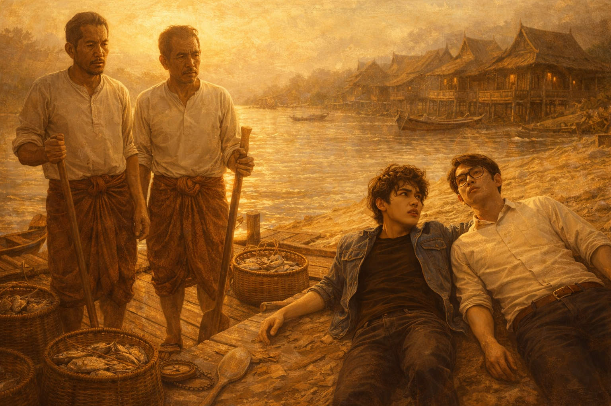

นนท์จำได้แค่เสียง — เสียงแตร เสียงยาง แล้วก็ความเงียบที่หนักราวกับก้อนหิน
กี้จำได้แค่ท้องฟ้า — มืดสนิท ไม่มีดาว ไม่มีเมฆ ไม่มีอะไรเลยนอกจากความดำสนิทที่กลืนทุกสิ่ง
จากนั้นทั้งคู่ก็จำอะไรไม่ได้อีกเลย

"กี้... นี่มันไหน?" นนท์พยายามลืมตา กะพริบสองสามครั้ง ท้องฟ้าสีทองกำลังสว่างขึ้นอย่างช้าๆ
ไม่มีตึก ไม่มีสายไฟ ไม่มีเสียงรถ มีแต่เสียงน้ำ เสียงนก และกลิ่นดินชื้นที่เข้มข้นราวกับโลกยังใหม่

ชายชราในผ้าโจงกระเบนสีน้ำตาลดินเดินเข้ามาระวังระไว สายตาสำรวจเสื้อยืดดำและกางเกงยีนส์ขาดของนนท์จากหัวจรดเท้า ราวกับกำลังดูสิ่งมีชีวิตที่ไม่เคยเห็นในชีวิต
กี้คำนวณในหัวเงียบๆ แล้วหน้าซีดลงอย่างเห็นได้ชัด
ข่าวในตลาดเช้าวันนั้นพูดถึงเรื่องเดียวกัน — โรงพยาบาลใหม่ที่ฝั่งธนบุรี ที่ในหลวงทรงสร้างขึ้น
เธอหยุด เสียงแผ่วลงเหมือนยังพูดไม่ออก นนท์เอี้ยวหน้าถามกี้เงียบๆ
ตลาดยังวุ่นวาย แต่อยู่ดีๆ นนท์รู้สึกหนักอึ้งในอก ราวกับอากาศเปลี่ยนรสชาติ
สองหนุ่มยืนอ้าปากค้างหน้าอาคารไม้สีน้ำตาลอ่อน
อาคารไม่โอ่อ่า ไม่หรูหรา แต่มีบางอย่างที่ยิ่งใหญ่กว่าตึกสูงทุกหลัง — มันคืออาคารแรกในสยามที่ตั้งขึ้นเพื่อรักษาคนทุกคน ไม่ว่าจะรวยหรือจน ขุนนางหรือชาวบ้าน
กี้ยืนเงียบนาน ก่อนจะควักสมุดเล็กขึ้นมาเขียน
นนท์จ้องตะเกียงน้ำมันที่ส่องแสงสีส้มสั่นริบ นึกถึงห้อง ICU สมัยใหม่ — มอนิเตอร์เป็นสิบเครื่อง ไฟสว่างจ้า เครื่องช่วยหายใจ เสียงบี๊บทุกวินาที
แต่ที่นี่มีแค่ตะเกียง มือของหมอ และความตั้งใจที่ไม่ต่างจากสมัยใหม่แม้แต่นิดเดียว
มันไม่น้อยกว่ากัน แค่ต่างกัน
หมอสูงอายุที่ทั้งสองเรียกว่า "หมอปลัด" เล่าให้ฟังโดยไม่ได้ถูกถาม — ราวกับเขาแบกเรื่องนี้ไว้นานแล้ว
เขาหยุดพักสักครู่ มองมือตัวเองที่เริ่มสั่นตามวัย
นนท์ไม่มีอะไรจะพูด เขาแค่พยักหน้า
หมอฝรั่งมองทั้งคู่ด้วยความงุนงง พูดภาษาสยามปนฝรั่งเศสงูๆ ปลาๆ ว่า "ไม่เจ็บ... มาก"
ท้ายที่สุด กี้ฉีดก่อน หน้าตาเฉย นนท์หลับตาแน่น กัดฟัน และสรุปว่ามันเจ็บพอๆ กับสมัยใหม่ แต่เขาจะไม่มีวันยอมรับ
กี้อ่านออกเสียงเบาๆ จากเอกสารที่หมอปลัดยื่นให้
เขาหยุด
ความเงียบตกทับทั้งสองคน นนท์ไม่เคยคิดว่าชื่อโรงพยาบาลที่เขาเคยไปรักษาตอนหัวแตกสมัยม.สาม จะมีเรื่องราวแบบนี้ซ่อนอยู่
บางทีเราใช้สิ่งของโดยไม่รู้ว่ามันสร้างขึ้นจากความเจ็บปวดของใคร
นนท์ยืนดูหมอสาวทำแผลอยู่นาน ไม่มีถุงมือยาง ไม่มีสเปรย์ทำความสะอาด ไม่มีไฟส่องแผล แต่เธอทำทุกอย่างช้าและถูกต้อง — ล้างมือก่อน ต้มน้ำ ผ้าขาวสะอาด
นนท์นิ่งไปครู่หนึ่ง แล้วพยักหน้าช้าๆ
นนท์คิดถึงกรุงเทพที่โตมา — ไฟสว่างทุกซอก ทุกตึก ทุกถนน แต่เขาจำไม่ได้ว่าครั้งสุดท้ายที่เขาเงยหน้ามองดาวคือเมื่อไหร่
บางทีการมีทุกอย่าง ทำให้เราลืมมองบางสิ่ง
ข่าวแพร่ไปทั่วโรงพยาบาลในชั่วโมงเดียว — รัชกาลที่ 5 จะเสด็จมาตรวจโรงพยาบาล ทุกคนยืนเรียงรับเสด็จ นนท์และกี้หลบอยู่หลังต้นไม้ใหญ่
พระองค์เสด็จช้าๆ ทักทายหมอ ถามคนไข้ ทรงฟังรายงาน ไม่มีความเร่งรีบ ไม่มีความอวดโอ่
กี้เขียนไม่หยุดตลอดคืน นนท์เอ้ออ่านผ่านไหล่
พวกเขาไม่รู้ว่าจะกลับได้ยังไง ไม่มีสูตร ไม่มีเครื่องย้อนเวลา แต่เช้านี้บางอย่างในอากาศรู้สึกต่างออกไป — แสงสว่างขึ้น ลมเย็นขึ้น แม่น้ำไหลเร็วขึ้นเล็กน้อย
ทั้งสองมองแม่น้ำ จากนั้นแสงก็จ้าขึ้นเรื่อยๆ จ้าจนทั้งคู่ต้องหลับตา ความอบอุ่นสีทองห่อหุ้มทุกสิ่ง
นนท์ตื่นขึ้นในห้องฉุกเฉิน ไฟฟลูออเรสเซนต์สีขาวจ้า เสียงมอนิเตอร์บี๊บ กลิ่นแอลกอฮอล์คุ้นเคย
กี้นอนเตียงข้างๆ กำลังลืมตา ทั้งสองมองกัน ไม่พูดอะไร
แต่เมื่อนนท์หันไปมองป้ายบนผนัง
เขารู้สึกบางอย่างในอกที่ไม่เคยรู้สึกมาก่อน ชื่อสามพยางค์ที่เขาเคยพูดติดปาก ตอนนี้มีน้ำหนักมากขึ้นอย่างบอกไม่ถูก